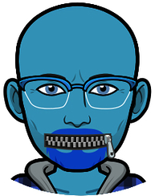

-
About Kernelcon
Kernelcon is the result of many motivated information security professionals who recognized the opportunity to create an awesome security conference in Omaha. The idea for Kernelcon started within the local DEF CON Group, DC402, with lots of help from other members of other local security groups such as NebraskaCERT and OWASP. We are inspired by many other conferences including DEF CON, DerbyCon, ShmooCon, etc., and wanted to bring those same experiences to the Mid-West here in Omaha.
Our goal is to make Omaha an annual destination for security professionals around the world that want to have a unique conference experience.
We hope you enjoy the conference as much as we did planning it.
-
Code of Conduct
Kernelcon is commited to providing a harassment-free experience for every person, regardless of gender, gender identity and expression, sexual orientation, disability, physical appearance, body size, age, race, religion, or editor preference. We do not tolerate any forms of harassment of group participants.
This code of conduct applies to all Kernelcon mediums, including meetups, events, and online chats. Anyone who violates this code of conduct may be sanctioned or expelled from these mediums at the discretion of the Kernelcon BODs.
Harassment includes:
- Offensive comments related to gender, gender identity and expression, sexual orientation, disability, mental illness, neuro(a)typicality, physical appearance, body size, age, race, religion, or technical skill level.
- Unwelcome comments regarding a person's lifestyle choices and practices, including those related to food, health, parenting, drugs, and employment.
- Deliberate misgendering or use of 'dead' or rejected names.
- Gratuitous or off-topic sexual images or behaviour in spaces where they're not appropriate.
- Physical contact and simulated physical contact (eg, textual descriptions like "hug" or "backrub") without consent or after a request to stop.
- Threats of violence.
- Incitement of violence towards any individual, including encouraging a person to commit suicide or to engage in self-harm.
- Deliberate intimidation.
- Stalking or following.
- Harassing photography or recording, including logging online activity for harassment purposes.
- Sustained disruption of discussion.
- Unwelcome sexual attention.
- Pattern of inappropriate social contact, such as requesting/assuming inappropriate levels of intimacy with others offline or online.
- Continued one-on-one communication after requests to cease.
- Deliberate "outing" of any aspect of a person's identity without their consent except as necessary to protect vulnerable people from intentional abuse.
- Publication of non-harassing private communication.
Kernelcon encourages participants to act as though they are surrounded by colleagues. This means that in our offline and online meetings, events, and discussions you will be expected to:
- Minimize use of profanity.
- Restrict conversation of sensitive subjects including, but not limited to, politics and religion, to private communications.
- If you are being harassed by a Kernelcon member, notice that someone else is being harassed, or have any other concerns, please contact the Kernelcon BODs at report@kernelcon.org. If the person who is harassing you is a Kernelcon BOD, they will recuse themselves from handling your incident. We will respond in a prompt and decisive manner.
-
Organizing Committee
 -
A Yes you should. Kernelcon is not just for hackers and IT professionals, it is for anyone who has an interest in computer security, hacking, malware research, or electronics. If those or other similar things interest you, you will likely enjoy Kernelcon.A Of course! How else are you going to be able to post pics of all the fun at Kernelcon to IG? We aim to provide a robust and highly capable wireless network. You should consider it semi-hostile. Make sure you use appropriate VPN or other secure methods of communication because it is a security conference after all, and we’re sure people are listening.A No, while there is not content scheduled that is specifically focused on younger hackers, children are allowed. If they are under 14 years old, they receive free admission with a paid adult purchase. All minors must be accompanied by a parent.A
- 100% refund if cancelled before March 1st, 2019.
- 50% refund if cancelled between March 1st and April 4th, 2019.
- 0% refund after con starts on April 5th, 2019.
A No, but we smile when talks include core parts of a operating system, a softer typically edible part of a nut, cereal, grain, fruit, corn, a convolution matrix, classes of algorithms like SVM, or an unmarked linguistic string.A There are currently no plans for this.